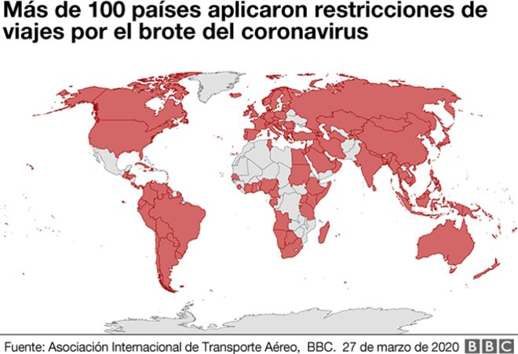

La pandemia del nuevo coronavirus, que se originó en China a finales de 2019, ha contagiado a más de 690.000 personas, de acuerdo con cifras de la Universidad John Hopkins de Estados Unidos.Su impacto ha puesto a las empresas alrededor de todo el mundo a contabilizar crecientes costos y pérdidas.
El desplome de las bolsas
Las bolsas de valores, donde se compran y venden las acciones de las empresas,
han sufrido grandes cambios que pueden afectar muchas inversiones tanto de fondos de pensiones como de cuentas de ahorros individuales
(ISAs, según sus siglas en inglés).
El índice FTSE (de la bolsa de Londres), como el Dow Jones (de Estados Unidos), y el Nikkei (de Japón) han registrado grandes caídas desde el inicio de la pandemia a finales de diciembre.
Los inversores temen que la pandemia destruya el crecimiento económico y que las medidas de los gobiernos no serán suficientes para detener la caída.
En respuesta, los bancos centrales de muchos países, incluyendo Reino Unido, han recortado las tasas de interés.
En teoría, eso debería reducir el costo de solicitar préstamos y estimular el consumo para dar impulso a la economía.
Los mercados globales recuperaron parte de las pérdidas después de que el Senado de Estados Unidos aprobó una ley que contempla US$2 billones para ayudar a trabajadores y empresas a hacer frente a la crisis.
Turismo y viajes en picada
El sector de viajes y turismo ha sido duramente golpeado, obligando a las líneas aéreas a reducir los vuelos, ante la masiva cancelación de los viajes de turismo y de negocios.
La caída en la actividad también es consecuencia de las restricciones impuestas por los gobiernos sobre la llegada a sus territorios de viajeros procedentes del extranjero, como un intento de contener el virus.

Consumidores que acumulan comida
Tanto los supermercados como los servicios de entrega a domicilio han reportado un enorme incremento en la demanda, mientras los consumidores compran grandes cantidades de productos como papel de baño, arroz y jugo de naranja ante el aumento de la pandemia.
Los efectos visibles de la cuarentena
Para frenar el crecimiento de la pandemia, muchos gobierno alrededor del mundo han comenzado a aplicar medidas muy estrictas. Países enteros e importantes capitales han sido puestos bajo cuarentena, lo que ha llevado a una paralización general de las cadenas de producción industrial.
La Agencia Europea del Espacio registró una caída impresionante de la contaminación en los cielos del viejo continente.
La informacion de los ultimos mese da a saber que se está produciendo una fuerte reducción en la emisión de gases contaminantes sobre grandes ciudades del continente, en particular en París, Milán y Madrid. Todo esto debido a la inactividad de las fabricas.